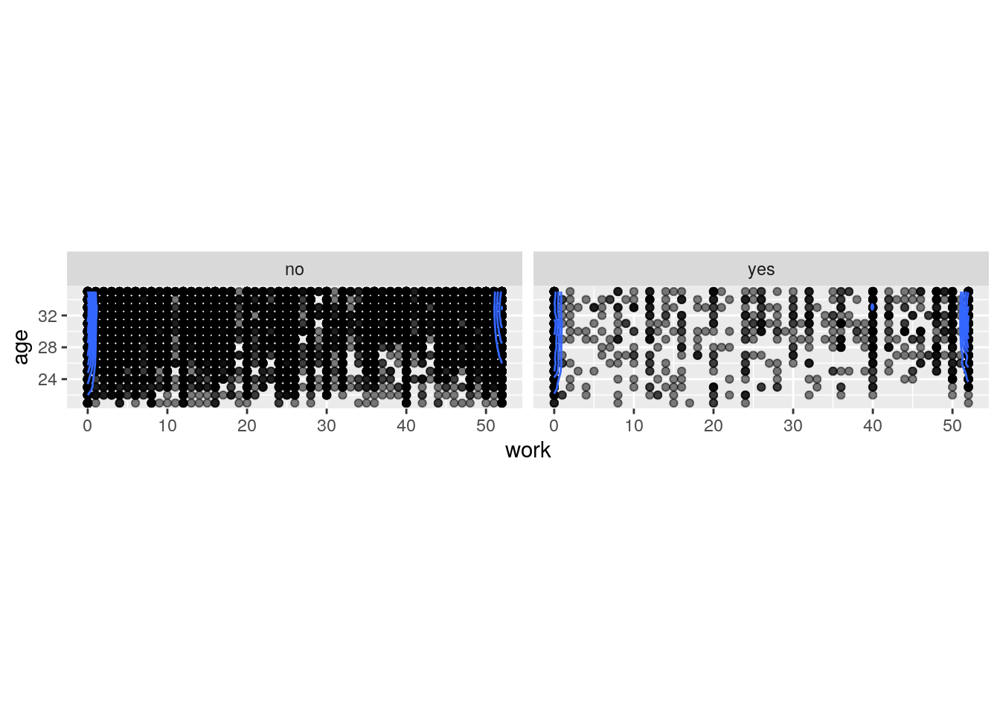
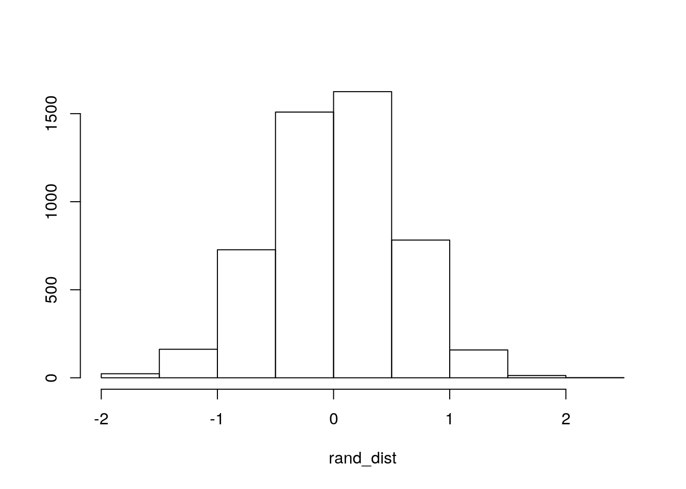
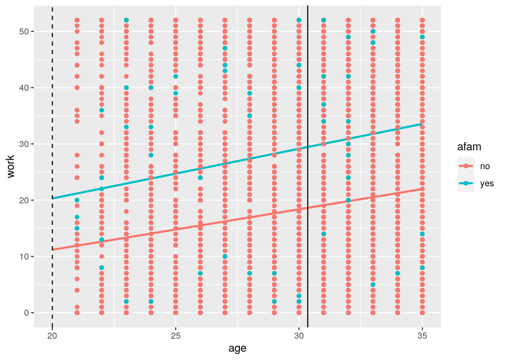
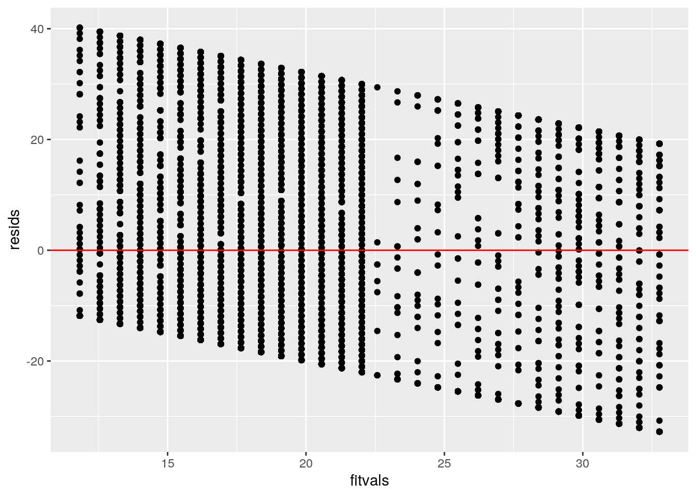
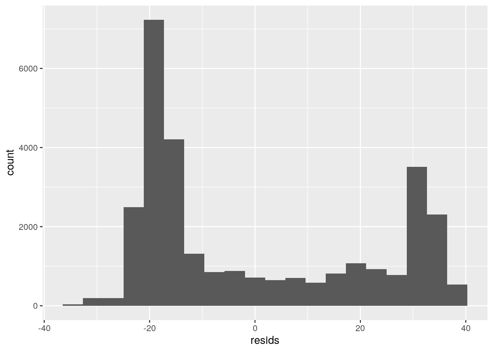
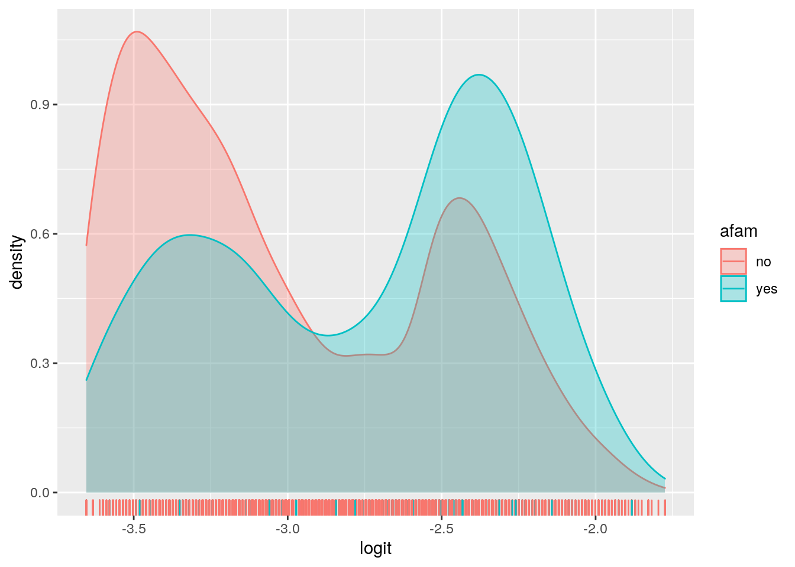
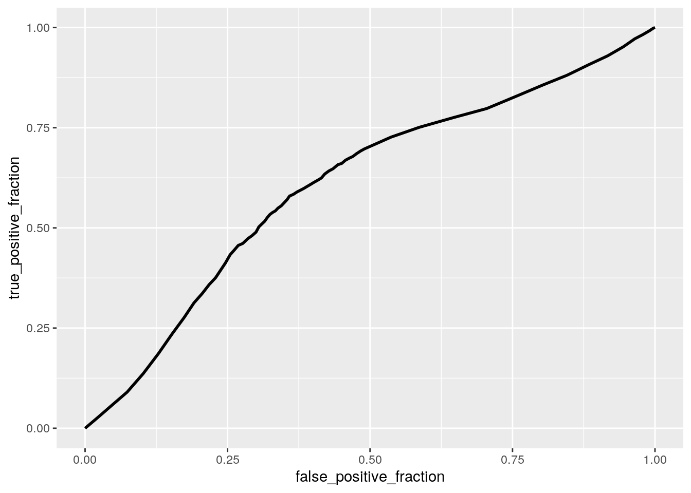

This data is from the 1980 US Census, specifically concerning married women aged 21-35 with two or more children. It has 30,000 randomly selected observations on 8 variables. The variables should be interpreted as follows:
morekids: Does the mother have more than 2 children? gender1: Gender of the first child gender2: Gender of the second child age: Mother’s age in years afam: Does the mother identify as African American? hispanic: Does the mother identify as Hispanic? other: Does the mother identify as something other than African American, Hispanic, or Caucasian? work: Number of weeks the mother worked in 1979
library(tidyverse)## ── Attaching packages ─────────────────────────────────────── tidyverse 1.3.0 ──## ✓ ggplot2 3.3.3 ✓ purrr 0.3.4
## ✓ tibble 3.0.4 ✓ dplyr 1.0.2
## ✓ tidyr 1.1.2 ✓ stringr 1.4.0
## ✓ readr 1.4.0 ✓ forcats 0.5.0## ── Conflicts ────────────────────────────────────────── tidyverse_conflicts() ──
## x dplyr::filter() masks stats::filter()
## x dplyr::lag() masks stats::lag()fertility <- read_csv("Fertility2.csv")## Warning: Missing column names filled in: 'X1' [1]##
## ── Column specification ────────────────────────────────────────────────────────
## cols(
## X1 = col_double(),
## morekids = col_character(),
## gender1 = col_character(),
## gender2 = col_character(),
## age = col_double(),
## afam = col_character(),
## hispanic = col_character(),
## other = col_character(),
## work = col_double()
## )glimpse(fertility)## Rows: 30,000
## Columns: 9
## $ X1 <dbl> 1, 2, 3, 4, 5, 6, 7, 8, 9, 10, 11, 12, 13, 14, 15, 16, 17, 1…
## $ morekids <chr> "no", "no", "no", "no", "no", "no", "yes", "no", "yes", "no"…
## $ gender1 <chr> "female", "female", "female", "male", "female", "female", "f…
## $ gender2 <chr> "female", "male", "female", "male", "male", "male", "female"…
## $ age <dbl> 35, 33, 28, 28, 31, 33, 28, 25, 31, 35, 34, 21, 33, 30, 32, …
## $ afam <chr> "no", "no", "no", "no", "no", "no", "no", "no", "no", "no", …
## $ hispanic <chr> "no", "no", "no", "no", "no", "no", "no", "no", "no", "no", …
## $ other <chr> "no", "no", "no", "no", "no", "no", "no", "no", "no", "no", …
## $ work <dbl> 40, 52, 12, 0, 0, 0, 0, 20, 0, 37, 0, 12, 12, 0, 52, 52, 52,…Below I performed a MANOVA testing whether the number of weeks worked and the age of the mother show a mean difference across levels of the catagorical variable afam. The very small p value indicated that the overall MANOVA is significant.
man1<-manova(cbind(work,age)~afam, data=fertility)
summary(man1)## Df Pillai approx F num Df den Df Pr(>F)
## afam 1 0.013032 198.04 2 29997 < 2.2e-16 ***
## Residuals 29998
## ---
## Signif. codes: 0 '***' 0.001 '**' 0.01 '*' 0.05 '.' 0.1 ' ' 1Therefore, I performed follow-up one-way ANOVAs for each variable. I found that both are significant. I performed post-hoc t tests.
summary.aov(man1)## Response work :
## Df Sum Sq Mean Sq F value Pr(>F)
## afam 1 164910 164910 346.5 < 2.2e-16 ***
## Residuals 29998 14276856 476
## ---
## Signif. codes: 0 '***' 0.001 '**' 0.01 '*' 0.05 '.' 0.1 ' ' 1
##
## Response age :
## Df Sum Sq Mean Sq F value Pr(>F)
## afam 1 274 274.237 23.974 9.814e-07 ***
## Residuals 29998 343143 11.439
## ---
## Signif. codes: 0 '***' 0.001 '**' 0.01 '*' 0.05 '.' 0.1 ' ' 1fertility%>%group_by(afam)%>%summarize(mean(age),mean(work))## `summarise()` ungrouping output (override with `.groups` argument)## # A tibble: 2 x 3
## afam `mean(age)` `mean(work)`
## <chr> <dbl> <dbl>
## 1 no 30.4 18.7
## 2 yes 30.0 29.1pairwise.t.test(fertility$age,fertility$afam, p.adj="none")##
## Pairwise comparisons using t tests with pooled SD
##
## data: fertility$age and fertility$afam
##
## no
## yes 9.8e-07
##
## P value adjustment method: nonepairwise.t.test(fertility$work,fertility$afam, p.adj="none")##
## Pairwise comparisons using t tests with pooled SD
##
## data: fertility$work and fertility$afam
##
## no
## yes <2e-16
##
## P value adjustment method: noneggplot(fertility, aes(x = work, y = age)) +
geom_point(alpha = .5) + geom_density_2d(h=2) + coord_fixed() + facet_wrap(~afam)
library(rstatix)##
## Attaching package: 'rstatix'## The following object is masked from 'package:stats':
##
## filtergroup <- fertility$afam
DVs <- fertility %>% select(age,work)
box_m(DVs, group)## # A tibble: 1 x 4
## statistic p.value parameter method
## <dbl> <dbl> <dbl> <chr>
## 1 4.81 0.186 3 Box's M-test for Homogeneity of Covariance Matric…1-(0.95^5)## [1] 0.22621910.05/5## [1] 0.01Did 1 MANOVA, 2 ANOVAs, and 2 t tests (5 tests).
Probability of at least 1 Type 1 error: 1-0.95^5=0.2262191 Bonferroni Correction: 0.05/5=0.01 Even with the correction, it’s still significant.
MANOVA Assumptions: 1. Random samples, independent observations Probably met 2. Multivariate normality of DVs Probably failed 3. Homogeneity of within-group covariance matrices Probably failed 4. Linear relationships among DVs Probably met 5. No extreme univariate or multivariate outliers Probably met 6. No multicollinearity. Probably met
H0: Mean weeks worked is the same for African American women as women of other races. HA: Mean weeks worked is different for African American women as compared to women of other races.
The p value is incredibly small. It was crazy that we got that mean difference. Reject the null hypothesis.
fertility%>%group_by(afam)%>%
summarize(means=mean(work))%>%summarize(`mean_diff`=diff(means))## `summarise()` ungrouping output (override with `.groups` argument)## # A tibble: 1 x 1
## mean_diff
## <dbl>
## 1 10.4rand_dist<-vector()
for(i in 1:5000){
new<-data.frame(work=sample(fertility$work),afam=fertility$afam)
rand_dist[i]<-mean(new[new$afam=="no",]$work)-
mean(new[new$afam=="yes",]$work)}
{hist(rand_dist,main="",ylab=""); abline(v = c(10.4405, 10.4405),col="red")}
mean(rand_dist>10.4405 | rand_dist < -10.4405)## [1] 0Is there a difference in weeks worked for African American women vs. non-African American women controlling for age? H0: Controlling for age, race does not explain variation in weeks worked H0: Controlling for race, age does not explain variation in weeks worked Controlling for age, for every 1-unit increase in weeks worked, odds of afam change by a factor of 10.7505 Controlling for race, for every 1-unit increase in weeks worked, age increases by 0.7281 units.
0.02401509 is the proportion of variation in the response variable explained by the overall model (all predictors at once)
Recomputing regression results with robust standard errors didn’t really change anything.
#Interpret the coefficient estimates (do not discuss significance) (10)
library(lmtest)## Loading required package: zoo##
## Attaching package: 'zoo'## The following objects are masked from 'package:base':
##
## as.Date, as.Date.numericlibrary(sandwich)
fit<-lm(work ~ afam + age, data=fertility)
summary(fit)##
## Call:
## lm(formula = work ~ afam + age, data = fertility)
##
## Residuals:
## Min 1Q Median 3Q Max
## -32.77 -19.11 -12.55 23.08 40.17
##
## Coefficients:
## Estimate Std. Error t value Pr(>|t|)
## (Intercept) -3.4641 1.1314 -3.062 0.0022 **
## afamyes 10.7505 0.5575 19.283 <2e-16 ***
## age 0.7281 0.0370 19.676 <2e-16 ***
## ---
## Signif. codes: 0 '***' 0.001 '**' 0.01 '*' 0.05 '.' 0.1 ' ' 1
##
## Residual standard error: 21.68 on 29997 degrees of freedom
## Multiple R-squared: 0.02402, Adjusted R-squared: 0.02395
## F-statistic: 369.1 on 2 and 29997 DF, p-value: < 2.2e-16#Plot the regression using ggplot() using geom_smooth(method=“lm”). (10)
ggplot(fertility, aes(age,work, color = afam)) + geom_smooth(method = "lm", se = F, fullrange = T) + geom_point()+geom_vline(xintercept=20,lty=2)+geom_vline(xintercept=mean(fertility$age))## `geom_smooth()` using formula 'y ~ x'
#What proportion of the variation in the outcome does your model explain?
(sum((fertility$work-mean(fertility$work))^2)-sum(fit$residuals^2))/sum((fertility$work-mean(fertility$work))^2)## [1] 0.024015090.02401509## [1] 0.02401509#Check assumptions of linearity, normality, and homoskedasticity either graphically or using a hypothesis test (5)
resids<-fit$residuals; fitvals<-fit$fitted.values
ggplot()+geom_point(aes(fitvals,resids))+geom_hline(yintercept=0, col="red")
ggplot()+geom_histogram(aes(resids),bins=20)
#Regardless, recompute regression results with robust standard errors via coeftest(..., vcov=vcovHC(...)). Discuss significance of results, including any changes from before/after robust SEs if applicable. (10)
coeftest(fit, vcov = vcovHC(fit))[,1:2]## Estimate Std. Error
## (Intercept) -3.4641029 1.07659732
## afamyes 10.7504913 0.56454156
## age 0.7281006 0.03554687The SEs changed quite a bit from the original/robust SEs. The calculations using original/robust SEs for afamyes and age were ~10.75 and ~0.73, respectively. This model yields 0.5563305 and 0.03747412 for afamyes and age.
samp_distn<-replicate(5000, {
boot_dat<-boot_dat<-fertility[sample(nrow(fertility),replace=TRUE),]
fit<-lm(work ~ afam + age, data=boot_dat)
coef(fit)
})
## Estimated SEs
samp_distn%>%t%>%as.data.frame%>%summarize_all(sd)## (Intercept) afamyes age
## 1 1.102738 0.5615364 0.03637131fit<-lm(work ~ afam + age, data=fertility)
resids<-fit$residuals
fitted<-fit$fitted.values
resid_resamp<-replicate(5000,{
new_resids<-sample(resids,replace=TRUE)
newdat<-fertility
newdat$new_y<-fitted+new_resids
fit<-lm(new_y ~ afam + age, data = newdat)
coef(fit)
})
resid_resamp%>%t%>%as.data.frame%>%summarize_all(sd)## (Intercept) afamyes age
## 1 1.098957 0.5630139 0.03592216Controlling for weeks worked, for every 1-unit increase in age, odds of afam change by a factor of 1.021881974 Controlling for age, for every 1-unit increase in weeks worked, odds of afam change by a factor of 0.9475790646 Accuracy: 0.9032667 Sensitivity (TPR): 0.1082603 (this is horrible) Specificity (TNR): 0.9479966 Precision (PPV): 0.1048485 (this is horrible) AUC: 0.6105911 this is a poor AUC value. It makes sense that if Sensitivity is bad, Precision will also be bad. This model has problems correctly identifying when a woman is African American. The poor AUC implies that it is only a little better than a model making random predictions about whether or not a woman is African American.
fertility_data<-fertility%>%mutate(y=ifelse(afam=="yes",1,0))
fit2<-glm(y~fertility$age+fertility$work, family="binomial", data=fertility_data)
coeftest(fit2)##
## z test of coefficients:
##
## Estimate Std. Error z value Pr(>|z|)
## (Intercept) -1.7692818 0.2252672 -7.8541 4.025e-15 ***
## fertility$age -0.0538449 0.0075351 -7.1459 8.942e-13 ***
## fertility$work 0.0216460 0.0011581 18.6911 < 2.2e-16 ***
## ---
## Signif. codes: 0 '***' 0.001 '**' 0.01 '*' 0.05 '.' 0.1 ' ' 1probs<-predict(fit2,type="response")
table(predict=as.numeric(probs>.1),truth=fertility_data$y)%>%addmargins## truth
## predict 0 1 Sum
## 0 26925 1425 28350
## 1 1477 173 1650
## Sum 28402 1598 30000#accuracy
(26925+173)/30000## [1] 0.9032667#sensitivity
173/1598## [1] 0.1082603#specificity
26925/28402## [1] 0.9479966#precision
173/1650## [1] 0.1048485fertility_data$logit <- predict(fit2, type="link")
fertility_data%>%ggplot()+geom_density(aes(logit,color=afam,fill=afam), alpha=.3)+geom_rug(aes(logit,color=afam))
library(plotROC)
ROCplot<-ggplot(fertility_data)+geom_roc(aes(d=y,m=work+age), n.cuts=0)
ROCplot
calc_auc(ROCplot)## PANEL group AUC
## 1 1 -1 0.6105911Accuracy: 0.8618333 Sensitivity (TPR): 0.2534418 (this is horrible- a slight improvement from last time) Specificity (TNR): 0.8960637 Precision (PPV): 0.1206434 (this is horrible) AUC: 0.6900022 (This is a poor, borderline fair AUC value.It’s an improvement from before but it’s not good)
After doing the 10-fold CV, the accuracy increased to 0.9467333, the sensitivity decreased to ~0, and the specificity increased to ~1. The AUC decreased to 0.6882682
After doing the LASSO, the following variables are retained: morekidsyes, age, hispanicyes, otheryes, and work.
After performing a 10-fold CV using only the variables lasso selected, the model’s out-of-sample AUC (0.6887184) is not that different from the logistic regression above (0.6882682). It is a little worse than the first logistic regression (0.6900022).
#Fit model, compute in-sample classification diagnostics (Accuracy, Sensitivity, Specificity, Precision, AUC), and interpret (5)
fertility_data6<-fertility%>%mutate(y=ifelse(afam=="yes",1,0))
fertility_data6$afam <- NULL
fit6<-glm(y~., family="binomial", data=fertility_data6)
coeftest(fit6)##
## z test of coefficients:
##
## Estimate Std. Error z value Pr(>|z|)
## (Intercept) -1.5853e+00 2.3459e-01 -6.7578 1.401e-11 ***
## X1 5.5631e-06 3.0100e-06 1.8482 0.06457 .
## morekidsyes 5.8929e-01 5.3720e-02 10.9698 < 2.2e-16 ***
## gender1male 2.6193e-02 5.2125e-02 0.5025 0.61531
## gender2male -5.0370e-03 5.2085e-02 -0.0967 0.92296
## age -6.9773e-02 7.6968e-03 -9.0652 < 2.2e-16 ***
## hispanicyes -1.0835e+00 1.8757e-01 -5.7763 7.635e-09 ***
## otheryes -1.5404e+01 1.5203e+02 -0.1013 0.91930
## work 2.4059e-02 1.1838e-03 20.3245 < 2.2e-16 ***
## ---
## Signif. codes: 0 '***' 0.001 '**' 0.01 '*' 0.05 '.' 0.1 ' ' 1probs<-predict(fit6,type="response")
table(predict=as.numeric(probs>.1),truth=fertility_data6$y)%>%addmargins## truth
## predict 0 1 Sum
## 0 25450 1193 26643
## 1 2952 405 3357
## Sum 28402 1598 30000#accuracy
(25450+405)/30000## [1] 0.8618333#sensitivity
405/1598## [1] 0.2534418#specificity
25450/28402## [1] 0.8960637#precision
405/3357## [1] 0.1206434ROCplot<-ggplot(fertility_data6)+geom_roc(aes(d=y,m=probs), n.cuts=0)+ geom_segment(aes(x=0,xend=1,y=0,yend=1),lty=2)
calc_auc(ROCplot)## PANEL group AUC
## 1 1 -1 0.6900022#Perform 10-fold (or repeated random sub-sampling) CV with the same model and report average out-of-sample classification diagnostics (Accuracy, Sensitivity, Specificity, Precision, and AUC); interpret AUC and compare with the in-sample metrics (10)
set.seed(1234)
k=10 #choose number of folds
data<-fertility_data6[sample(nrow(fertility_data6)),] #randomly order rows
folds<-cut(seq(1:nrow(fertility_data6)),breaks=k,labels=F) #create folds
diags<-NULL
for(i in 1:k){
## Create training and test sets
train<-data[folds!=i,]
test<-data[folds==i,]
truth<-test$y ## Truth labels for fold i
## Train model on training set (all but fold i)
fit<-glm(y~.,data=train,family="binomial")
## Test model on test set (fold i)
probs<-predict(fit,newdata = test,type="response")
## Get diagnostics for fold i
diags<-rbind(diags,class_diag(probs,truth))
}
summarize_all(diags,mean) #average diagnostics across all k folds## acc sens spec ppv auc
## 1 0.9467333 0 1 NaN 0.6882682#Perform LASSO on the same model/variables. Choose lambda to give the simplest model whose accuracy is near that of the best (i.e., lambda.1se). Discuss which variables are retained. (5)
#install.packages("glmnet")
library(glmnet)## Loading required package: Matrix##
## Attaching package: 'Matrix'## The following objects are masked from 'package:tidyr':
##
## expand, pack, unpack## Loaded glmnet 4.0-2set.seed(1234)
predictors <- model.matrix(y ~ (.), data = fertility_data6)[, -1]
response_variable <- as.matrix(fertility_data6$y)
cv <- cv.glmnet(predictors, response_variable, family = "binomial")
lasso <- glmnet(predictors, response_variable, family = "binomial", lambda = cv$lambda.1se)
coef(lasso)## 9 x 1 sparse Matrix of class "dgCMatrix"
## s0
## (Intercept) -2.78383611
## X1 .
## morekidsyes 0.20441721
## gender1male .
## gender2male .
## age -0.01615886
## hispanicyes -0.22853189
## otheryes -0.70599276
## work 0.01603183#Perform 10-fold CV using only the variables lasso selected: compare model’s out-of-sample AUC to that of your logistic regressions above
lasso_classdiag <- fertility %>% mutate(morekids = ifelse(morekids == "yes", 1, 0)) %>% mutate(afam = ifelse(afam == "yes", 1, 0)) %>% mutate(hispanic = ifelse(hispanic == "yes", 1, 0)) %>% mutate(other = ifelse(other == "yes", 1, 0)) %>% select(morekids, age, hispanic, other, work, afam)
set.seed(125)
k = 10
data <- lasso_classdiag[sample(nrow(lasso_classdiag)), ]
folds <- cut(1:nrow(lasso_classdiag), breaks = k, labels = F)
diags <- NULL
for (i in 1:k) {
train <- data[folds != i, ]
test <- data[folds == i, ]
truth <- test$afam
fit <- glm(afam ~ (.), data = train, family = "binomial")
probs <- predict(fit, newdata = test, type = "response")
diags <- rbind(diags, class_diag(probs, truth))
}
summarize_all(diags, mean)## acc sens spec ppv auc
## 1 0.9467333 0 1 NaN 0.6885087